Offline downward graph - LENGTH HOLD Both versions/engines, all cases retained. V1 first observations; V2 failed tapered analytic gate retained in raw logs/tools; V3 fixes grid redundancy and observes a local contrast-support boundary. No effect drawn, model inference, source landmark mutation or product guard bypass. Graph attachment is not same-fiber root ownership; a support boundary is not a physical free tip.
Full report | Prior geometric audit | Production/recovery portraits, source licenses and credits . Earlier sources: Unsplash , Pexels . Derivative diagnostic crops do not imply endorsement.
Legend: green=passes offline filters (NOT approved lash); orange=protected/uncertain endpoint; red=other rejected graph; cyan=terminal hypothesis; white circles=frozen source-only ending uncertainties. Ridge map gray=response0..255 normalized by.15. Observation map blue=root-zone pixels, green=root-connected pixels, gray=other observed ridges. Missing connectivity is not absent-hair proof. Native view zoom 100% 200% 400%
V1 / chromium light.jpg Full original JPEG
left (subject side) Root seeds9, connected pixels12, hypotheses7, offline-qualified0. Product whole-eye veto=false, Length veto=false; unchanged.
{"short-observed-path":7,"protected-or-uncertain-tip":7,"forward-support-not-an-ending":1,"width-unresolved":7,"distal-orientation":5} left-original-native (169x101) left-all-hypotheses-native (169x101) 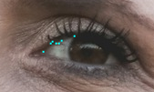
left-trace0-original160 (160x160) left-trace1-original160 (160x160) left-trace2-original160 (160x160) 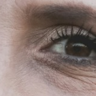
left-trace3-original160 (160x160) 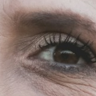
left-trace4-original160 (160x160) left-trace5-original160 (160x160) ridge (168x99 working grid) observed-connected (168x99 working grid) right (subject side) Root seeds11, connected pixels20, hypotheses10, offline-qualified0. Product whole-eye veto=false, Length veto=false; unchanged.
{"protected-or-uncertain-tip":10,"short-observed-path":9,"forward-support-not-an-ending":1,"distal-orientation":8,"width-unresolved":8} right-original-native (148x110) right-all-hypotheses-native (148x110) 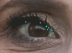
right-trace0-original160 (160x160) 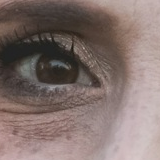
right-trace1-original160 (160x160) 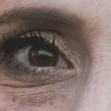
right-trace2-original160 (160x160) right-trace3-original160 (160x160) 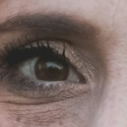
right-trace4-original160 (160x160) right-trace5-original160 (160x160) 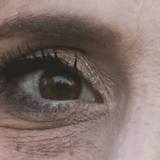
ridge (146x109 working grid) 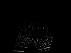
observed-connected (146x109 working grid) 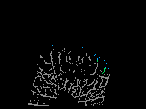
natural.jpg Full original JPEG
left (subject side) Root seeds40, connected pixels51, hypotheses24, offline-qualified0. Product whole-eye veto=false, Length veto=false; unchanged.
{"short-observed-path":23,"protected-or-uncertain-tip":24,"forward-support-not-an-ending":1,"distal-branch-ambiguity":1,"distal-orientation":22,"multiple-root-associations":2,"width-unresolved":22,"domain-boundary":1} left-original-native (195x133) 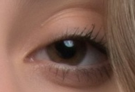
left-all-hypotheses-native (195x133) left-trace0-original160 (160x160) 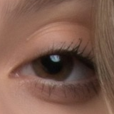
left-trace1-original160 (160x160) 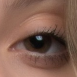
left-trace2-original160 (160x160) 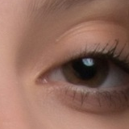
left-trace3-original160 (160x160) 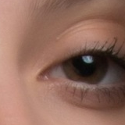
left-trace4-original160 (160x160) 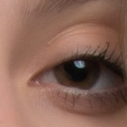
left-trace5-original160 (160x160) 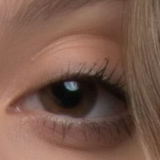
ridge (193x131 working grid) 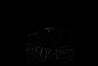
observed-connected (193x131 working grid) 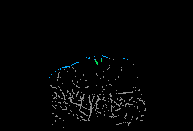
right (subject side) Root seeds51, connected pixels56, hypotheses34, offline-qualified0. Product whole-eye veto=false, Length veto=false; unchanged.
{"short-observed-path":34,"protected-or-uncertain-tip":34,"forward-support-not-an-ending":1,"width-unresolved":32,"distal-branch-ambiguity":1,"distal-orientation":31,"multiple-root-associations":2,"domain-boundary":1} right-original-native (218x136) 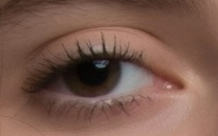
right-all-hypotheses-native (218x136) right-trace0-original160 (160x160) 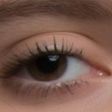
right-trace1-original160 (160x160) 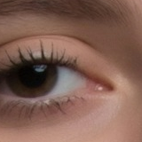
right-trace2-original160 (160x160) 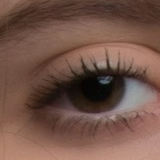
right-trace3-original160 (160x160) 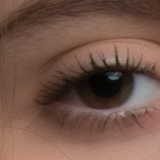
right-trace4-original160 (160x160) right-trace5-original160 (160x160) 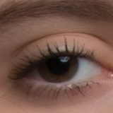
ridge (216x134 working grid) 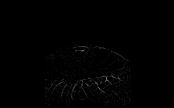
observed-connected (216x134 working grid) 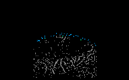
hair-occlusion.jpg Full original JPEG
left (subject side) Root seeds102, connected pixels160, hypotheses48, offline-qualified0. Product whole-eye veto=true, Length veto=true; unchanged.
{"protected-or-uncertain-tip":48,"distal-orientation":30,"distal-branch-ambiguity":13,"forward-support-not-an-ending":9,"multiple-root-associations":14,"short-observed-path":40,"width-unresolved":29} left-original-native (212x113) left-all-hypotheses-native (212x113) 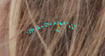
left-trace0-original160 (160x160) left-trace1-original160 (160x160) left-trace2-original160 (160x160) 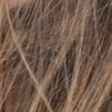
left-trace3-original160 (160x160) left-trace4-original160 (160x160) left-trace5-original160 (160x160) ridge (211x112 working grid) 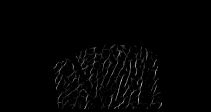
observed-connected (211x112 working grid) 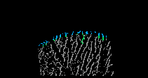
right (subject side) Root seeds93, connected pixels124, hypotheses35, offline-qualified0. Product whole-eye veto=false, Length veto=false; unchanged.
{"protected-or-uncertain-tip":35,"distal-branch-ambiguity":4,"multiple-root-associations":10,"short-observed-path":32,"forward-support-not-an-ending":2,"width-unresolved":26,"distal-orientation":23,"domain-boundary":1} right-original-native (203x137) right-all-hypotheses-native (203x137) 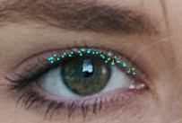
right-trace0-original160 (160x160) 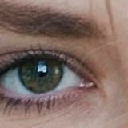
right-trace1-original160 (160x160) right-trace2-original160 (160x160) 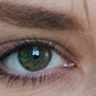
right-trace3-original160 (160x160) right-trace4-original160 (160x160) right-trace5-original160 (160x160) 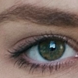
ridge (201x136 working grid) 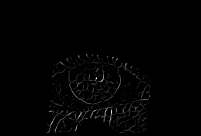
observed-connected (201x136 working grid) 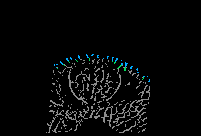
light-rotated25.jpg Full original JPEG
left (subject side) Root seeds7, connected pixels12, hypotheses5, offline-qualified0. Product whole-eye veto=false, Length veto=false; unchanged.
{"protected-or-uncertain-tip":5,"short-observed-path":4,"distal-orientation":3,"width-unresolved":3} left-original-native (149x153) left-all-hypotheses-native (149x153) left-trace0-original160 (160x160) left-trace1-original160 (160x160) left-trace2-original160 (160x160) left-trace3-original160 (160x160) left-trace4-original160 (160x160) ridge (147x152 working grid) observed-connected (147x152 working grid) 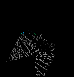
right (subject side) Root seeds9, connected pixels34, hypotheses10, offline-qualified0. Product whole-eye veto=false, Length veto=false; unchanged.
{"protected-or-uncertain-tip":10,"short-observed-path":8,"distal-branch-ambiguity":1,"forward-support-not-an-ending":1,"distal-orientation":6,"width-unresolved":6} right-original-native (121x184) right-all-hypotheses-native (121x184) 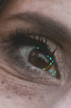
right-trace0-original160 (160x160) 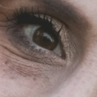
right-trace1-original160 (160x160) right-trace2-original160 (160x160) right-trace3-original160 (160x160) 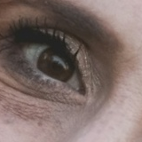
right-trace4-original160 (160x160) right-trace5-original160 (160x160) ridge (120x183 working grid) 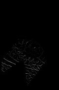
observed-connected (120x183 working grid) 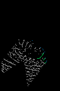
pexels-7123010.jpg Full original JPEG
left (subject side) Root seeds149, connected pixels206, hypotheses69, offline-qualified0. Product whole-eye veto=true, Length veto=true; unchanged.
{"protected-or-uncertain-tip":69,"distal-branch-ambiguity":10,"multiple-root-associations":12,"forward-support-not-an-ending":15,"width-unresolved":48,"short-observed-path":64,"distal-orientation":47,"domain-boundary":1} left-original-native (614x244) left-all-hypotheses-native (614x244) 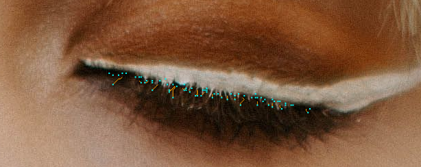
left-trace0-original160 (160x160) 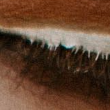
left-trace1-original160 (160x160) 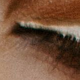
left-trace2-original160 (160x160) 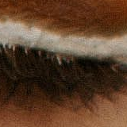
left-trace3-original160 (160x160) 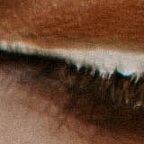
left-trace4-original160 (160x160) 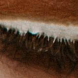
left-trace5-original160 (160x160) 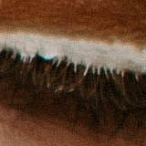
ridge (224x89 working grid) observed-connected (224x89 working grid) right (subject side) Root seeds85, connected pixels100, hypotheses60, offline-qualified0. Product whole-eye veto=false, Length veto=true; unchanged.
{"short-observed-path":59,"protected-or-uncertain-tip":60,"forward-support-not-an-ending":6,"distal-branch-ambiguity":2,"distal-orientation":51,"width-unresolved":51,"multiple-root-associations":1} right-original-native (586x158) right-all-hypotheses-native (586x158) right-trace0-original160 (160x160) right-trace1-original160 (160x160) right-trace2-original160 (160x160) right-trace3-original160 (160x160) right-trace4-original160 (160x160) right-trace5-original160 (160x160) ridge (224x60 working grid) observed-connected (224x60 working grid)
pexels-32526448.jpg Full original JPEG
left (subject side) Root seeds59, connected pixels92, hypotheses40, offline-qualified0. Product whole-eye veto=false, Length veto=false; unchanged.
{"protected-or-uncertain-tip":40,"distal-branch-ambiguity":1,"forward-support-not-an-ending":2,"short-observed-path":38,"distal-orientation":37,"multiple-root-associations":2,"width-unresolved":38,"domain-boundary":1} left-original-native (695x503) left-all-hypotheses-native (695x503) left-trace0-original160 (160x160) left-trace1-original160 (160x160) left-trace2-original160 (160x160) left-trace3-original160 (160x160) left-trace4-original160 (160x160) left-trace5-original160 (160x160) ridge (224x161 working grid) observed-connected (224x161 working grid)
right (subject side) Root seeds85, connected pixels105, hypotheses55, offline-qualified0. Product whole-eye veto=false, Length veto=false; unchanged.
{"short-observed-path":54,"protected-or-uncertain-tip":55,"forward-support-not-an-ending":7,"distal-branch-ambiguity":3,"width-unresolved":46,"distal-orientation":45,"multiple-root-associations":1,"domain-boundary":1} right-original-native (868x579) right-all-hypotheses-native (868x579) right-trace0-original160 (160x160) right-trace1-original160 (160x160) right-trace2-original160 (160x160) right-trace3-original160 (160x160) right-trace4-original160 (160x160) right-trace5-original160 (160x160) ridge (224x149 working grid) observed-connected (224x149 working grid)
pexels-4611686.jpg Full original JPEG
left (subject side) Root seeds127, connected pixels179, hypotheses72, offline-qualified0. Product whole-eye veto=false, Length veto=false; unchanged.
{"short-observed-path":67,"protected-or-uncertain-tip":72,"forward-support-not-an-ending":9,"distal-branch-ambiguity":5,"multiple-root-associations":9,"width-unresolved":58,"distal-orientation":55,"domain-boundary":2} left-original-native (719x422) left-all-hypotheses-native (719x422) left-trace0-original160 (160x160) left-trace1-original160 (160x160) left-trace2-original160 (160x160) left-trace3-original160 (160x160) left-trace4-original160 (160x160) left-trace5-original160 (160x160) ridge (223x131 working grid) observed-connected (223x131 working grid)
right (subject side) Root seeds127, connected pixels180, hypotheses71, offline-qualified0. Product whole-eye veto=false, Length veto=true; unchanged.
{"protected-or-uncertain-tip":71,"distal-branch-ambiguity":11,"forward-support-not-an-ending":10,"short-observed-path":64,"multiple-root-associations":13,"width-unresolved":59,"distal-orientation":56,"domain-boundary":2} right-original-native (1116x412) right-all-hypotheses-native (1116x412) right-trace0-original160 (160x160) right-trace1-original160 (160x160) right-trace2-original160 (160x160) right-trace3-original160 (160x160) right-trace4-original160 (160x160) right-trace5-original160 (160x160) ridge (224x82 working grid) observed-connected (224x82 working grid)
pexels-21792059.jpg Full original JPEG
left (subject side) Root seeds46, connected pixels104, hypotheses34, offline-qualified0. Product whole-eye veto=true, Length veto=true; unchanged.
{"protected-or-uncertain-tip":33,"distal-branch-ambiguity":7,"forward-support-not-an-ending":4,"multiple-root-associations":3,"domain-boundary":3,"distal-orientation":26,"short-observed-path":28,"width-unresolved":25} left-original-native (805x412) left-all-hypotheses-native (805x412) left-trace0-original160 (160x160) left-trace1-original160 (160x160) left-trace2-original160 (160x160) left-trace3-original160 (160x160) left-trace4-original160 (160x160) left-trace5-original160 (160x160) ridge (224x114 working grid) observed-connected (224x114 working grid)
right (subject side) Root seeds115, connected pixels196, hypotheses58, offline-qualified0. Product whole-eye veto=true, Length veto=true; unchanged.
{"distal-branch-ambiguity":11,"forward-support-not-an-ending":10,"domain-boundary":1,"multiple-root-associations":11,"protected-or-uncertain-tip":54,"short-observed-path":50,"distal-orientation":40,"width-unresolved":40} right-original-native (1076x743) right-all-hypotheses-native (1076x743) right-trace0-original160 (160x160) right-trace1-original160 (160x160) right-trace2-original160 (160x160) right-trace3-original160 (160x160) right-trace4-original160 (160x160) right-trace5-original160 (160x160) ridge (224x154 working grid) observed-connected (224x154 working grid)
V1 / webkit light.jpg Full original JPEG
left (subject side) Root seeds13, connected pixels13, hypotheses7, offline-qualified0. Product whole-eye veto=false, Length veto=false; unchanged.
{"short-observed-path":7,"protected-or-uncertain-tip":7,"distal-orientation":7,"width-unresolved":7} left-original-native (167x99) left-all-hypotheses-native (167x99) left-trace0-original160 (160x160) left-trace1-original160 (160x160) left-trace2-original160 (160x160) left-trace3-original160 (160x160) left-trace4-original160 (160x160) left-trace5-original160 (160x160) ridge (166x98 working grid) observed-connected (166x98 working grid)
right (subject side) Root seeds13, connected pixels16, hypotheses11, offline-qualified0. Product whole-eye veto=false, Length veto=false; unchanged.
{"short-observed-path":11,"domain-boundary":1,"protected-or-uncertain-tip":11,"forward-support-not-an-ending":2,"distal-orientation":9,"width-unresolved":9} right-original-native (146x105) right-all-hypotheses-native (146x105) right-trace0-original160 (160x160) right-trace1-original160 (160x160) right-trace2-original160 (160x160) right-trace3-original160 (160x160) right-trace4-original160 (160x160) right-trace5-original160 (160x160) ridge (144x103 working grid) observed-connected (144x103 working grid)
natural.jpg Full original JPEG
left (subject side) Root seeds33, connected pixels41, hypotheses22, offline-qualified0. Product whole-eye veto=false, Length veto=false; unchanged.
{"protected-or-uncertain-tip":22,"distal-branch-ambiguity":3,"short-observed-path":19,"distal-orientation":19,"multiple-root-associations":1,"width-unresolved":19} left-original-native (195x132) left-all-hypotheses-native (195x132) left-trace0-original160 (160x160) left-trace1-original160 (160x160) left-trace2-original160 (160x160) left-trace3-original160 (160x160) left-trace4-original160 (160x160) left-trace5-original160 (160x160) ridge (194x131 working grid) observed-connected (194x131 working grid)
right (subject side) Root seeds44, connected pixels46, hypotheses34, offline-qualified0. Product whole-eye veto=false, Length veto=false; unchanged.
{"short-observed-path":34,"protected-or-uncertain-tip":34,"distal-orientation":33,"width-unresolved":33,"multiple-root-associations":1,"domain-boundary":1} right-original-native (217x129) right-all-hypotheses-native (217x129) right-trace0-original160 (160x160) right-trace1-original160 (160x160) right-trace2-original160 (160x160) right-trace3-original160 (160x160) right-trace4-original160 (160x160) right-trace5-original160 (160x160) ridge (215x127 working grid) observed-connected (215x127 working grid)
hair-occlusion.jpg Full original JPEG
left (subject side) Root seeds105, connected pixels165, hypotheses55, offline-qualified0. Product whole-eye veto=true, Length veto=true; unchanged.
{"protected-or-uncertain-tip":55,"distal-branch-ambiguity":8,"multiple-root-associations":9,"forward-support-not-an-ending":8,"short-observed-path":51,"width-unresolved":38,"distal-orientation":36,"domain-boundary":3} left-original-native (218x117) left-all-hypotheses-native (218x117) left-trace0-original160 (160x160) left-trace1-original160 (160x160) left-trace2-original160 (160x160) left-trace3-original160 (160x160) left-trace4-original160 (160x160) left-trace5-original160 (160x160) ridge (217x115 working grid) observed-connected (217x115 working grid)
right (subject side) Root seeds95, connected pixels131, hypotheses43, offline-qualified0. Product whole-eye veto=false, Length veto=false; unchanged.
{"protected-or-uncertain-tip":43,"distal-branch-ambiguity":8,"forward-support-not-an-ending":5,"short-observed-path":40,"distal-orientation":27,"multiple-root-associations":8,"width-unresolved":29,"domain-boundary":2} right-original-native (206x137) right-all-hypotheses-native (206x137) right-trace0-original160 (160x160) right-trace1-original160 (160x160) right-trace2-original160 (160x160) right-trace3-original160 (160x160) right-trace4-original160 (160x160) right-trace5-original160 (160x160) ridge (204x135 working grid) observed-connected (204x135 working grid)
light-rotated25.jpg Full original JPEG
left (subject side) Root seeds17, connected pixels28, hypotheses13, offline-qualified0. Product whole-eye veto=false, Length veto=false; unchanged.
{"short-observed-path":12,"protected-or-uncertain-tip":13,"distal-branch-ambiguity":3,"width-unresolved":11,"forward-support-not-an-ending":1,"distal-orientation":10} left-original-native (152x156) left-all-hypotheses-native (152x156) left-trace0-original160 (160x160) left-trace1-original160 (160x160) left-trace2-original160 (160x160) left-trace3-original160 (160x160) left-trace4-original160 (160x160) left-trace5-original160 (160x160) ridge (150x154 working grid) observed-connected (150x154 working grid)
right (subject side) Root seeds8, connected pixels14, hypotheses7, offline-qualified0. Product whole-eye veto=false, Length veto=false; unchanged.
{"protected-or-uncertain-tip":7,"distal-branch-ambiguity":1,"short-observed-path":6,"distal-orientation":6,"width-unresolved":6,"domain-boundary":1} right-original-native (122x180) right-all-hypotheses-native (122x180) right-trace0-original160 (160x160) right-trace1-original160 (160x160) right-trace2-original160 (160x160) right-trace3-original160 (160x160) right-trace4-original160 (160x160) right-trace5-original160 (160x160) ridge (121x178 working grid) observed-connected (121x178 working grid)
pexels-7123010.jpg Full original JPEG
left (subject side) Root seeds150, connected pixels200, hypotheses71, offline-qualified0. Product whole-eye veto=true, Length veto=true; unchanged.
{"protected-or-uncertain-tip":71,"distal-branch-ambiguity":7,"multiple-root-associations":13,"forward-support-not-an-ending":8,"short-observed-path":69,"distal-orientation":54,"width-unresolved":54} left-original-native (622x247) left-all-hypotheses-native (622x247) left-trace0-original160 (160x160) left-trace1-original160 (160x160) left-trace2-original160 (160x160) left-trace3-original160 (160x160) left-trace4-original160 (160x160) left-trace5-original160 (160x160) ridge (223x88 working grid) observed-connected (223x88 working grid) right (subject side) Root seeds123, connected pixels156, hypotheses81, offline-qualified0. Product whole-eye veto=true, Length veto=true; unchanged.
{"protected-or-uncertain-tip":81,"short-observed-path":79,"distal-branch-ambiguity":5,"forward-support-not-an-ending":9,"distal-orientation":63,"width-unresolved":66,"multiple-root-associations":5} right-original-native (595x162) right-all-hypotheses-native (595x162) right-trace0-original160 (160x160) right-trace1-original160 (160x160) right-trace2-original160 (160x160) right-trace3-original160 (160x160) right-trace4-original160 (160x160) right-trace5-original160 (160x160) ridge (224x60 working grid) observed-connected (224x60 working grid) pexels-32526448.jpg Full original JPEG
left (subject side) Root seeds66, connected pixels82, hypotheses45, offline-qualified0. Product whole-eye veto=false, Length veto=false; unchanged.
{"protected-or-uncertain-tip":45,"multiple-root-associations":3,"short-observed-path":44,"distal-orientation":39,"forward-support-not-an-ending":3,"width-unresolved":38,"distal-branch-ambiguity":1,"domain-boundary":2} left-original-native (689x477) left-all-hypotheses-native (689x477) left-trace0-original160 (160x160) left-trace1-original160 (160x160) left-trace2-original160 (160x160) left-trace3-original160 (160x160) left-trace4-original160 (160x160) left-trace5-original160 (160x160) ridge (224x155 working grid) observed-connected (224x155 working grid)
right (subject side) Root seeds101, connected pixels128, hypotheses70, offline-qualified0. Product whole-eye veto=false, Length veto=false; unchanged.
{"short-observed-path":69,"protected-or-uncertain-tip":70,"forward-support-not-an-ending":8,"width-unresolved":62,"domain-boundary":3,"distal-orientation":58,"distal-branch-ambiguity":2,"multiple-root-associations":3} right-original-native (863x562) right-all-hypotheses-native (863x562) right-trace0-original160 (160x160) right-trace1-original160 (160x160) right-trace2-original160 (160x160) right-trace3-original160 (160x160) right-trace4-original160 (160x160) right-trace5-original160 (160x160) ridge (224x145 working grid) observed-connected (224x145 working grid)
pexels-4611686.jpg Full original JPEG
left (subject side) Root seeds147, connected pixels202, hypotheses81, offline-qualified0. Product whole-eye veto=false, Length veto=true; unchanged.
{"protected-or-uncertain-tip":81,"distal-branch-ambiguity":6,"forward-support-not-an-ending":14,"distal-orientation":66,"width-unresolved":71,"short-observed-path":76,"multiple-root-associations":9,"domain-boundary":3} left-original-native (728x422) left-all-hypotheses-native (728x422) left-trace0-original160 (160x160) left-trace1-original160 (160x160) left-trace2-original160 (160x160) left-trace3-original160 (160x160) left-trace4-original160 (160x160) left-trace5-original160 (160x160) ridge (224x129 working grid) observed-connected (224x129 working grid)
right (subject side) Root seeds183, connected pixels263, hypotheses127, offline-qualified0. Product whole-eye veto=false, Length veto=true; unchanged.
{"protected-or-uncertain-tip":126,"distal-branch-ambiguity":9,"forward-support-not-an-ending":12,"short-observed-path":121,"distal-orientation":104,"width-unresolved":104,"multiple-root-associations":5,"domain-boundary":1} right-original-native (1118x360) right-all-hypotheses-native (1118x360) right-trace0-original160 (160x160) right-trace1-original160 (160x160) right-trace2-original160 (160x160) right-trace3-original160 (160x160) right-trace4-original160 (160x160) right-trace5-original160 (160x160) ridge (224x72 working grid) observed-connected (224x72 working grid)
pexels-21792059.jpg Full original JPEG
left (subject side) Root seeds38, connected pixels44, hypotheses26, offline-qualified0. Product whole-eye veto=true, Length veto=true; unchanged.
{"short-observed-path":26,"protected-or-uncertain-tip":26,"width-unresolved":22,"forward-support-not-an-ending":2,"distal-orientation":20,"multiple-root-associations":1} left-original-native (792x429) left-all-hypotheses-native (792x429) left-trace0-original160 (160x160) left-trace1-original160 (160x160) left-trace2-original160 (160x160) left-trace3-original160 (160x160) left-trace4-original160 (160x160) left-trace5-original160 (160x160) ridge (224x121 working grid) observed-connected (224x121 working grid)
right (subject side) Root seeds122, connected pixels190, hypotheses80, offline-qualified0. Product whole-eye veto=true, Length veto=true; unchanged.
{"protected-or-uncertain-tip":80,"distal-branch-ambiguity":8,"forward-support-not-an-ending":8,"short-observed-path":73,"multiple-root-associations":5,"width-unresolved":64,"distal-orientation":62,"domain-boundary":1} right-original-native (1057x731) right-all-hypotheses-native (1057x731) right-trace0-original160 (160x160) right-trace1-original160 (160x160) right-trace2-original160 (160x160) right-trace3-original160 (160x160) right-trace4-original160 (160x160) right-trace5-original160 (160x160) ridge (224x154 working grid) observed-connected (224x154 working grid)
V3 / chromium light.jpg Full original JPEG
left (subject side) Root seeds9, connected pixels12, hypotheses7, offline-qualified0. Product whole-eye veto=false, Length veto=false; unchanged.
{"short-observed-path":7,"terminal-localization-unresolved":1,"protected-or-uncertain-tip":7,"forward-support-not-an-ending":1,"width-unresolved":7,"distal-orientation":5,"tangent-valley-unconfirmed":1} left-original-native (169x101) left-all-hypotheses-native (169x101) left-trace0-original160 (160x160) left-trace1-original160 (160x160) left-trace2-original160 (160x160) left-trace3-original160 (160x160) left-trace4-original160 (160x160) left-trace5-original160 (160x160) ridge (168x99 working grid) observed-connected (168x99 working grid)
right (subject side) Root seeds11, connected pixels20, hypotheses10, offline-qualified0. Product whole-eye veto=false, Length veto=false; unchanged.
{"protected-or-uncertain-tip":10,"short-observed-path":9,"forward-support-not-an-ending":1,"distal-orientation":8,"width-unresolved":8} right-original-native (148x110) right-all-hypotheses-native (148x110) right-trace0-original160 (160x160) right-trace1-original160 (160x160) right-trace2-original160 (160x160) right-trace3-original160 (160x160) right-trace4-original160 (160x160) right-trace5-original160 (160x160) ridge (146x109 working grid) observed-connected (146x109 working grid)
natural.jpg Full original JPEG
left (subject side) Root seeds32, connected pixels35, hypotheses20, offline-qualified0. Product whole-eye veto=false, Length veto=false; unchanged.
{"short-observed-path":20,"protected-or-uncertain-tip":20,"distal-orientation":19,"width-unresolved":19,"multiple-root-associations":1,"domain-boundary":1} left-original-native (195x133) left-all-hypotheses-native (195x133) left-trace0-original160 (160x160) left-trace1-original160 (160x160) left-trace2-original160 (160x160) left-trace3-original160 (160x160) left-trace4-original160 (160x160) left-trace5-original160 (160x160) ridge (193x131 working grid) observed-connected (193x131 working grid)
right (subject side) Root seeds44, connected pixels49, hypotheses29, offline-qualified0. Product whole-eye veto=false, Length veto=false; unchanged.
{"short-observed-path":29,"terminal-localization-unresolved":1,"protected-or-uncertain-tip":29,"forward-support-not-an-ending":1,"tangent-valley-unconfirmed":2,"width-unresolved":28,"distal-orientation":26,"multiple-root-associations":1} right-original-native (218x136) right-all-hypotheses-native (218x136) right-trace0-original160 (160x160) right-trace1-original160 (160x160) right-trace2-original160 (160x160) right-trace3-original160 (160x160) right-trace4-original160 (160x160) right-trace5-original160 (160x160) ridge (216x134 working grid) observed-connected (216x134 working grid)
hair-occlusion.jpg Full original JPEG
left (subject side) Root seeds72, connected pixels98, hypotheses35, offline-qualified0. Product whole-eye veto=true, Length veto=true; unchanged.
{"terminal-localization-unresolved":4,"protected-or-uncertain-tip":35,"distal-branch-ambiguity":1,"forward-support-not-an-ending":7,"distal-orientation":27,"short-observed-path":33,"width-unresolved":26,"tangent-valley-unconfirmed":3,"multiple-root-associations":1} left-original-native (212x113) left-all-hypotheses-native (212x113) left-trace0-original160 (160x160) left-trace1-original160 (160x160) left-trace2-original160 (160x160) left-trace3-original160 (160x160) left-trace4-original160 (160x160) left-trace5-original160 (160x160) ridge (211x112 working grid) observed-connected (211x112 working grid)
right (subject side) Root seeds68, connected pixels89, hypotheses29, offline-qualified0. Product whole-eye veto=false, Length veto=false; unchanged.
{"tangent-valley-unconfirmed":5,"protected-or-uncertain-tip":29,"short-observed-path":28,"distal-orientation":20,"width-unresolved":22,"distal-branch-ambiguity":1,"domain-boundary":1} right-original-native (203x137) right-all-hypotheses-native (203x137) right-trace0-original160 (160x160) right-trace1-original160 (160x160) right-trace2-original160 (160x160) right-trace3-original160 (160x160) right-trace4-original160 (160x160) right-trace5-original160 (160x160) ridge (201x136 working grid) observed-connected (201x136 working grid)
light-rotated25.jpg Full original JPEG
left (subject side) Root seeds7, connected pixels12, hypotheses5, offline-qualified0. Product whole-eye veto=false, Length veto=false; unchanged.
{"protected-or-uncertain-tip":5,"short-observed-path":4,"distal-orientation":3,"width-unresolved":3} left-original-native (149x153) left-all-hypotheses-native (149x153) left-trace0-original160 (160x160) left-trace1-original160 (160x160) left-trace2-original160 (160x160) left-trace3-original160 (160x160) left-trace4-original160 (160x160) ridge (147x152 working grid) observed-connected (147x152 working grid)
right (subject side) Root seeds8, connected pixels15, hypotheses8, offline-qualified0. Product whole-eye veto=false, Length veto=false; unchanged.
{"short-observed-path":7,"terminal-localization-unresolved":1,"protected-or-uncertain-tip":8,"forward-support-not-an-ending":1,"tangent-valley-unconfirmed":1,"distal-orientation":6,"width-unresolved":6} right-original-native (121x184) right-all-hypotheses-native (121x184) right-trace0-original160 (160x160) right-trace1-original160 (160x160) right-trace2-original160 (160x160) right-trace3-original160 (160x160) right-trace4-original160 (160x160) right-trace5-original160 (160x160) ridge (120x183 working grid) observed-connected (120x183 working grid)
pexels-7123010.jpg Full original JPEG
left (subject side) Root seeds100, connected pixels130, hypotheses56, offline-qualified0. Product whole-eye veto=true, Length veto=true; unchanged.
{"terminal-localization-unresolved":7,"protected-or-uncertain-tip":56,"distal-branch-ambiguity":2,"forward-support-not-an-ending":13,"width-unresolved":40,"short-observed-path":55,"distal-orientation":39,"multiple-root-associations":2,"tangent-valley-unconfirmed":2,"domain-boundary":1} left-original-native (614x244) left-all-hypotheses-native (614x244) left-trace0-original160 (160x160) left-trace1-original160 (160x160) left-trace2-original160 (160x160) left-trace3-original160 (160x160) left-trace4-original160 (160x160) left-trace5-original160 (160x160) ridge (224x89 working grid) observed-connected (224x89 working grid) right (subject side) Root seeds74, connected pixels86, hypotheses53, offline-qualified0. Product whole-eye veto=false, Length veto=true; unchanged.
{"terminal-localization-unresolved":3,"protected-or-uncertain-tip":53,"forward-support-not-an-ending":5,"short-observed-path":52,"distal-orientation":46,"width-unresolved":46,"tangent-valley-unconfirmed":1} right-original-native (586x158) right-all-hypotheses-native (586x158) right-trace0-original160 (160x160) right-trace1-original160 (160x160) right-trace2-original160 (160x160) right-trace3-original160 (160x160) right-trace4-original160 (160x160) right-trace5-original160 (160x160) ridge (224x60 working grid) observed-connected (224x60 working grid)
pexels-32526448.jpg Full original JPEG
left (subject side) Root seeds43, connected pixels53, hypotheses31, offline-qualified0. Product whole-eye veto=false, Length veto=false; unchanged.
{"protected-or-uncertain-tip":31,"short-observed-path":30,"distal-orientation":28,"width-unresolved":30,"terminal-localization-unresolved":1,"forward-support-not-an-ending":2,"tangent-valley-unconfirmed":1,"domain-boundary":1} left-original-native (695x503) left-all-hypotheses-native (695x503) left-trace0-original160 (160x160) left-trace1-original160 (160x160) left-trace2-original160 (160x160) left-trace3-original160 (160x160) left-trace4-original160 (160x160) left-trace5-original160 (160x160) ridge (224x161 working grid) observed-connected (224x161 working grid)
right (subject side) Root seeds76, connected pixels90, hypotheses50, offline-qualified0. Product whole-eye veto=false, Length veto=false; unchanged.
{"protected-or-uncertain-tip":50,"short-observed-path":49,"distal-orientation":44,"width-unresolved":45,"terminal-localization-unresolved":2,"forward-support-not-an-ending":3,"tangent-valley-unconfirmed":1,"domain-boundary":1} right-original-native (868x579) right-all-hypotheses-native (868x579) right-trace0-original160 (160x160) right-trace1-original160 (160x160) right-trace2-original160 (160x160) right-trace3-original160 (160x160) right-trace4-original160 (160x160) right-trace5-original160 (160x160) ridge (224x149 working grid) observed-connected (224x149 working grid)
pexels-4611686.jpg Full original JPEG
left (subject side) Root seeds111, connected pixels146, hypotheses65, offline-qualified0. Product whole-eye veto=false, Length veto=false; unchanged.
{"protected-or-uncertain-tip":65,"terminal-localization-unresolved":4,"forward-support-not-an-ending":5,"short-observed-path":61,"tangent-valley-unconfirmed":5,"width-unresolved":56,"distal-orientation":53,"domain-boundary":2} left-original-native (719x422) left-all-hypotheses-native (719x422) left-trace0-original160 (160x160) left-trace1-original160 (160x160) left-trace2-original160 (160x160) left-trace3-original160 (160x160) left-trace4-original160 (160x160) left-trace5-original160 (160x160) ridge (223x131 working grid) observed-connected (223x131 working grid)
right (subject side) Root seeds97, connected pixels123, hypotheses57, offline-qualified0. Product whole-eye veto=false, Length veto=true; unchanged.
{"terminal-localization-unresolved":2,"protected-or-uncertain-tip":57,"distal-branch-ambiguity":1,"forward-support-not-an-ending":4,"multiple-root-associations":1,"short-observed-path":54,"width-unresolved":52,"tangent-valley-unconfirmed":1,"distal-orientation":51,"domain-boundary":2} right-original-native (1116x412) right-all-hypotheses-native (1116x412) right-trace0-original160 (160x160) right-trace1-original160 (160x160) right-trace2-original160 (160x160) right-trace3-original160 (160x160) right-trace4-original160 (160x160) right-trace5-original160 (160x160) ridge (224x82 working grid) observed-connected (224x82 working grid)
pexels-21792059.jpg Full original JPEG
left (subject side) Root seeds41, connected pixels74, hypotheses30, offline-qualified0. Product whole-eye veto=true, Length veto=true; unchanged.
{"terminal-localization-unresolved":2,"protected-or-uncertain-tip":30,"distal-branch-ambiguity":2,"forward-support-not-an-ending":3,"tangent-valley-unconfirmed":2,"short-observed-path":26,"domain-boundary":2,"distal-orientation":23,"width-unresolved":23} left-original-native (805x412) left-all-hypotheses-native (805x412) left-trace0-original160 (160x160) left-trace1-original160 (160x160) left-trace2-original160 (160x160) left-trace3-original160 (160x160) left-trace4-original160 (160x160) left-trace5-original160 (160x160) ridge (224x114 working grid) observed-connected (224x114 working grid)
right (subject side) Root seeds93, connected pixels133, hypotheses47, offline-qualified0. Product whole-eye veto=true, Length veto=true; unchanged.
{"terminal-localization-unresolved":3,"forward-support-not-an-ending":4,"short-observed-path":43,"protected-or-uncertain-tip":46,"distal-orientation":35,"tangent-valley-unconfirmed":4,"width-unresolved":35,"multiple-root-associations":1} right-original-native (1076x743) right-all-hypotheses-native (1076x743) right-trace0-original160 (160x160) right-trace1-original160 (160x160) right-trace2-original160 (160x160) right-trace3-original160 (160x160) right-trace4-original160 (160x160) right-trace5-original160 (160x160) ridge (224x154 working grid) observed-connected (224x154 working grid)
V3 / webkit light.jpg Full original JPEG
left (subject side) Root seeds10, connected pixels10, hypotheses6, offline-qualified0. Product whole-eye veto=false, Length veto=false; unchanged.
{"short-observed-path":6,"distal-orientation":6,"protected-or-uncertain-tip":6,"width-unresolved":6} left-original-native (167x99) left-all-hypotheses-native (167x99) left-trace0-original160 (160x160) left-trace1-original160 (160x160) left-trace2-original160 (160x160) left-trace3-original160 (160x160) left-trace4-original160 (160x160) left-trace5-original160 (160x160) ridge (166x98 working grid) observed-connected (166x98 working grid)
right (subject side) Root seeds13, connected pixels16, hypotheses11, offline-qualified0. Product whole-eye veto=false, Length veto=false; unchanged.
{"short-observed-path":11,"terminal-localization-unresolved":1,"domain-boundary":1,"protected-or-uncertain-tip":11,"forward-support-not-an-ending":2,"distal-orientation":9,"width-unresolved":9} right-original-native (146x105) right-all-hypotheses-native (146x105) right-trace0-original160 (160x160) right-trace1-original160 (160x160) right-trace2-original160 (160x160) right-trace3-original160 (160x160) right-trace4-original160 (160x160) right-trace5-original160 (160x160) ridge (144x103 working grid) observed-connected (144x103 working grid)
natural.jpg Full original JPEG
left (subject side) Root seeds26, connected pixels26, hypotheses16, offline-qualified0. Product whole-eye veto=false, Length veto=false; unchanged.
{"short-observed-path":16,"distal-orientation":16,"protected-or-uncertain-tip":16,"width-unresolved":16} left-original-native (195x132) left-all-hypotheses-native (195x132) left-trace0-original160 (160x160) left-trace1-original160 (160x160) left-trace2-original160 (160x160) left-trace3-original160 (160x160) left-trace4-original160 (160x160) left-trace5-original160 (160x160) ridge (194x131 working grid) observed-connected (194x131 working grid)
right (subject side) Root seeds37, connected pixels39, hypotheses28, offline-qualified0. Product whole-eye veto=false, Length veto=false; unchanged.
{"short-observed-path":28,"distal-orientation":27,"protected-or-uncertain-tip":28,"width-unresolved":27,"tangent-valley-unconfirmed":1,"multiple-root-associations":1} right-original-native (217x129) right-all-hypotheses-native (217x129) right-trace0-original160 (160x160) right-trace1-original160 (160x160) right-trace2-original160 (160x160) right-trace3-original160 (160x160) right-trace4-original160 (160x160) right-trace5-original160 (160x160) ridge (215x127 working grid) observed-connected (215x127 working grid)
hair-occlusion.jpg Full original JPEG
left (subject side) Root seeds78, connected pixels110, hypotheses41, offline-qualified0. Product whole-eye veto=true, Length veto=true; unchanged.
{"protected-or-uncertain-tip":41,"short-observed-path":39,"terminal-localization-unresolved":3,"forward-support-not-an-ending":3,"multiple-root-associations":1,"tangent-valley-unconfirmed":3,"distal-orientation":29,"width-unresolved":30,"domain-boundary":2} left-original-native (218x117) left-all-hypotheses-native (218x117) left-trace0-original160 (160x160) left-trace1-original160 (160x160) left-trace2-original160 (160x160) left-trace3-original160 (160x160) left-trace4-original160 (160x160) left-trace5-original160 (160x160) ridge (217x115 working grid) observed-connected (217x115 working grid)
right (subject side) Root seeds72, connected pixels97, hypotheses36, offline-qualified0. Product whole-eye veto=false, Length veto=false; unchanged.
{"short-observed-path":35,"distal-orientation":25,"protected-or-uncertain-tip":36,"width-unresolved":25,"tangent-valley-unconfirmed":2,"terminal-localization-unresolved":1,"forward-support-not-an-ending":3,"domain-boundary":2} right-original-native (206x137) right-all-hypotheses-native (206x137) right-trace0-original160 (160x160) right-trace1-original160 (160x160) right-trace2-original160 (160x160) right-trace3-original160 (160x160) right-trace4-original160 (160x160) right-trace5-original160 (160x160) ridge (204x135 working grid) observed-connected (204x135 working grid)
light-rotated25.jpg Full original JPEG
left (subject side) Root seeds15, connected pixels18, hypotheses10, offline-qualified0. Product whole-eye veto=false, Length veto=false; unchanged.
{"short-observed-path":10,"terminal-localization-unresolved":2,"protected-or-uncertain-tip":10,"forward-support-not-an-ending":2,"distal-orientation":8,"width-unresolved":8,"domain-boundary":1} left-original-native (152x156) left-all-hypotheses-native (152x156) left-trace0-original160 (160x160) left-trace1-original160 (160x160) left-trace2-original160 (160x160) left-trace3-original160 (160x160) left-trace4-original160 (160x160) left-trace5-original160 (160x160) ridge (150x154 working grid) observed-connected (150x154 working grid)
right (subject side) Root seeds8, connected pixels13, hypotheses8, offline-qualified0. Product whole-eye veto=false, Length veto=false; unchanged.
{"tangent-valley-unconfirmed":2,"protected-or-uncertain-tip":8,"distal-branch-ambiguity":2,"short-observed-path":7,"width-unresolved":7,"distal-orientation":6,"domain-boundary":1} right-original-native (122x180) right-all-hypotheses-native (122x180) right-trace0-original160 (160x160) right-trace1-original160 (160x160) right-trace2-original160 (160x160) right-trace3-original160 (160x160) right-trace4-original160 (160x160) right-trace5-original160 (160x160) ridge (121x178 working grid) observed-connected (121x178 working grid)
pexels-7123010.jpg Full original JPEG
left (subject side) Root seeds100, connected pixels125, hypotheses58, offline-qualified0. Product whole-eye veto=true, Length veto=true; unchanged.
{"short-observed-path":57,"distal-orientation":46,"protected-or-uncertain-tip":58,"width-unresolved":46,"tangent-valley-unconfirmed":2,"terminal-localization-unresolved":3,"forward-support-not-an-ending":6,"multiple-root-associations":1} left-original-native (622x247) left-all-hypotheses-native (622x247) left-trace0-original160 (160x160) left-trace1-original160 (160x160) left-trace2-original160 (160x160) left-trace3-original160 (160x160) left-trace4-original160 (160x160) left-trace5-original160 (160x160) ridge (223x88 working grid) observed-connected (223x88 working grid) right (subject side) Root seeds100, connected pixels122, hypotheses69, offline-qualified0. Product whole-eye veto=true, Length veto=true; unchanged.
{"short-observed-path":68,"protected-or-uncertain-tip":69,"distal-orientation":58,"width-unresolved":58,"terminal-localization-unresolved":1,"forward-support-not-an-ending":4,"multiple-root-associations":1,"tangent-valley-unconfirmed":1} right-original-native (595x162) right-all-hypotheses-native (595x162) right-trace0-original160 (160x160) right-trace1-original160 (160x160) right-trace2-original160 (160x160) right-trace3-original160 (160x160) right-trace4-original160 (160x160) right-trace5-original160 (160x160) ridge (224x60 working grid) observed-connected (224x60 working grid) pexels-32526448.jpg Full original JPEG
left (subject side) Root seeds53, connected pixels65, hypotheses42, offline-qualified0. Product whole-eye veto=false, Length veto=false; unchanged.
{"protected-or-uncertain-tip":42,"short-observed-path":40,"distal-orientation":39,"forward-support-not-an-ending":2,"width-unresolved":38,"domain-boundary":2} left-original-native (689x477) left-all-hypotheses-native (689x477) left-trace0-original160 (160x160) left-trace1-original160 (160x160) left-trace2-original160 (160x160) left-trace3-original160 (160x160) left-trace4-original160 (160x160) left-trace5-original160 (160x160) ridge (224x155 working grid) observed-connected (224x155 working grid)
right (subject side) Root seeds82, connected pixels102, hypotheses60, offline-qualified0. Product whole-eye veto=false, Length veto=false; unchanged.
{"short-observed-path":59,"terminal-localization-unresolved":3,"protected-or-uncertain-tip":60,"forward-support-not-an-ending":4,"distal-orientation":52,"domain-boundary":4,"width-unresolved":53} right-original-native (863x562) right-all-hypotheses-native (863x562) right-trace0-original160 (160x160) right-trace1-original160 (160x160) right-trace2-original160 (160x160) right-trace3-original160 (160x160) right-trace4-original160 (160x160) right-trace5-original160 (160x160) ridge (224x145 working grid) observed-connected (224x145 working grid)
pexels-4611686.jpg Full original JPEG
left (subject side) Root seeds121, connected pixels141, hypotheses78, offline-qualified0. Product whole-eye veto=false, Length veto=true; unchanged.
{"terminal-localization-unresolved":3,"protected-or-uncertain-tip":78,"forward-support-not-an-ending":6,"short-observed-path":77,"tangent-valley-unconfirmed":4,"distal-orientation":68,"width-unresolved":70,"domain-boundary":2} left-original-native (728x422) left-all-hypotheses-native (728x422) left-trace0-original160 (160x160) left-trace1-original160 (160x160) left-trace2-original160 (160x160) left-trace3-original160 (160x160) left-trace4-original160 (160x160) left-trace5-original160 (160x160) ridge (224x129 working grid) observed-connected (224x129 working grid)
right (subject side) Root seeds121, connected pixels159, hypotheses94, offline-qualified0. Product whole-eye veto=false, Length veto=true; unchanged.
{"protected-or-uncertain-tip":94,"forward-support-not-an-ending":7,"short-observed-path":92,"terminal-localization-unresolved":4,"distal-orientation":79,"width-unresolved":79,"tangent-valley-unconfirmed":4,"distal-branch-ambiguity":2,"multiple-root-associations":1} right-original-native (1118x360) right-all-hypotheses-native (1118x360) right-trace0-original160 (160x160) right-trace1-original160 (160x160) right-trace2-original160 (160x160) right-trace3-original160 (160x160) right-trace4-original160 (160x160) right-trace5-original160 (160x160) ridge (224x72 working grid) observed-connected (224x72 working grid)
pexels-21792059.jpg Full original JPEG
left (subject side) Root seeds38, connected pixels44, hypotheses26, offline-qualified0. Product whole-eye veto=true, Length veto=true; unchanged.
{"short-observed-path":26,"tangent-valley-unconfirmed":3,"protected-or-uncertain-tip":26,"width-unresolved":22,"forward-support-not-an-ending":2,"distal-orientation":20,"multiple-root-associations":1} left-original-native (792x429) left-all-hypotheses-native (792x429) left-trace0-original160 (160x160) left-trace1-original160 (160x160) left-trace2-original160 (160x160) left-trace3-original160 (160x160) left-trace4-original160 (160x160) left-trace5-original160 (160x160) ridge (224x121 working grid) observed-connected (224x121 working grid)
right (subject side) Root seeds96, connected pixels138, hypotheses72, offline-qualified0. Product whole-eye veto=true, Length veto=true; unchanged.
{"terminal-localization-unresolved":1,"protected-or-uncertain-tip":72,"forward-support-not-an-ending":2,"short-observed-path":67,"distal-orientation":61,"width-unresolved":62,"tangent-valley-unconfirmed":2,"distal-branch-ambiguity":2,"multiple-root-associations":1} right-original-native (1057x731) right-all-hypotheses-native (1057x731) right-trace0-original160 (160x160) right-trace1-original160 (160x160) right-trace2-original160 (160x160) right-trace3-original160 (160x160) right-trace4-original160 (160x160) right-trace5-original160 (160x160) ridge (224x154 working grid) observed-connected (224x154 working grid)
Every raw manifest, Float32 working-luma buffer, source/tool hash, initial tool snapshot and failed analytic log is indexed in files.json. Reuse earlier licensed source JPEGs by hash; no duplicated source download. All photo hypotheses abstain in both versions; no proposed effect or naturalness PASS. Pixel profiles, root ambiguity and all censored counts remain inspectable. Three no_face labels remain unevaluated. Physical devices UNVERIFIED.